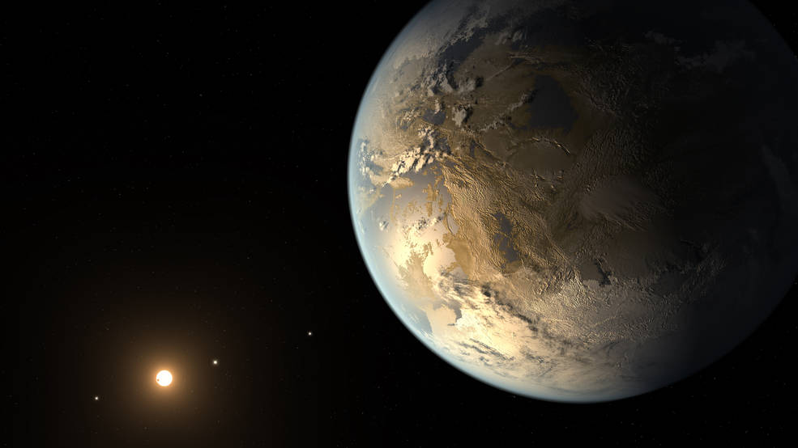
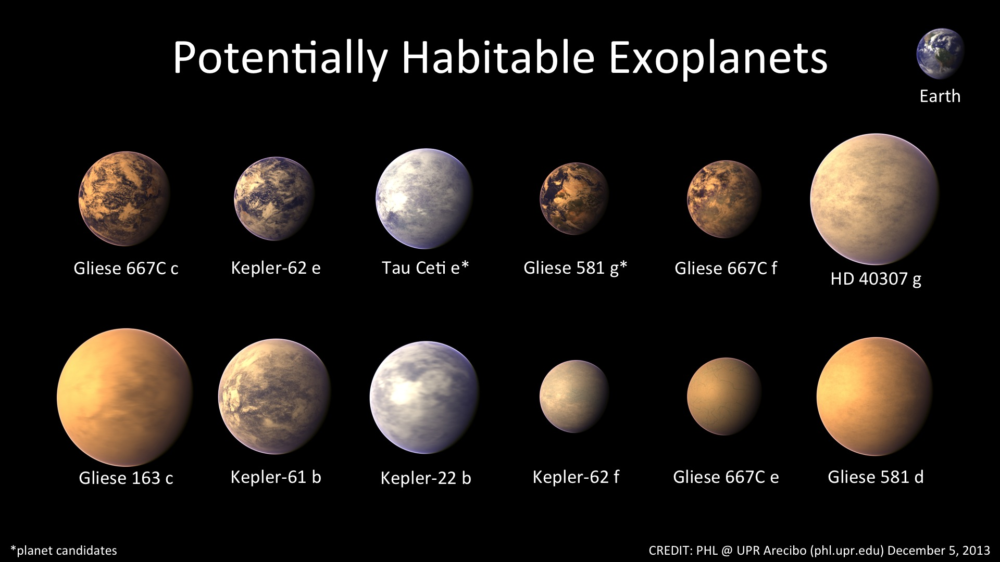

Exoplanets
Habitable planets NASA's Kepler Space Telescope, astronomers have discovered the first Earth-size planet orbiting a star in the "habitable zone" -- the range of distance from a star where liquid water might pool on the surface of an orbiting planet. The discovery of Kepler-186f confirms that planets the size of Earth exist in the habitable zone of stars other than our sun. While planets have previously been found in the habitable zone, they are all at least 40 percent larger in size than Earth and understanding their makeup is challenging. Kepler-186f is more reminiscent of Earth. "The discovery of Kepler-186f is a significant step toward finding worlds like our planet Earth," said Paul Hertz, NASA's Astrophysics Division director at the agency's headquarters in Washington. "Future NASA missions, like the Transiting Exoplanet Survey Satellite and the James Webb Space Telescope, will discover the nearest rocky exoplanets and determine their composition and atmospheric conditions, continuing humankind's quest to find truly Earth-like worlds." Although the size of Kepler-186f is known, its mass and composition are not. Previous research, however, suggests that a planet the size of Kepler-186f is likely to be rocky. "We know of just one planet where life exists -- Earth. When we search for life outside our solar system we focus on finding planets with characteristics that mimic that of Earth," said Elisa Quintana, research scientist at the SETI Institute at NASA's Ames Research Center in Moffett Field, Calif., and lead author of the paper published today in the journal Science. "Finding a habitable zone planet comparable to Earth in size is a major step forward." Kepler-186f resides in the Kepler-186 system, about 500 light-years from Earth in the constellation Cygnus. The system is also home to four companion planets, which orbit a star half the size and mass of our sun. The star is classified as an M dwarf, or red dwarf, a class of stars that makes up 70 percent of the stars in the Milky Way galaxy. "M dwarfs are the most numerous stars," said Quintana. "The first signs of other life in the galaxy may well come from planets orbiting an M dwarf." Kepler-186f orbits its star once every 130-days and receives one-third the energy from its star that Earth gets from the sun, placing it nearer the outer edge of the habitable zone. On the surface of Kepler-186f, the brightness of its star at high noon is only as bright as our sun appears to us about an hour before sunset.

Habitable zones "Being in the habitable zone does not mean we know this planet is habitable. The temperature on the planet is strongly dependent on what kind of atmosphere the planet has," said Thomas Barclay, research scientist at the Bay Area Environmental Research Institute at Ames, and co-author of the paper. "Kepler-186f can be thought of as an Earth-cousin rather than an Earth-twin. It has many properties that resemble Earth." The four companion planets, Kepler-186b, Kepler-186c, Kepler-186d, and Kepler-186e, whiz around their sun every four, seven, 13, and 22 days, respectively, making them too hot for life as we know it. These four inner planets all measure less than 1.5 times the size of Earth. The next steps in the search for distant life include looking for true Earth-twins -- Earth-size planets orbiting within the habitable zone of a sun-like star -- and measuring the their chemical compositions. The Kepler Space Telescope, which simultaneously and continuously measured the brightness of more than 150,000 stars, is NASA's first mission capable of detecting Earth-size planets around stars like our sun. Ames is responsible for Kepler's ground system development, mission operations, and science data analysis. NASA's Jet Propulsion Laboratory in Pasadena, Calif., managed Kepler mission development. Ball Aerospace and Technologies Corp. in Boulder, Colo., developed the Kepler flight system and supports mission operations with the Laboratory for Atmospheric and Space Physics at the University of Colorado in Boulder. The Space Telescope Science Institute in Baltimore archives, hosts and distributes Kepler science data. Kepler is NASA's 10th Discovery Mission and was funded by the agency's Science Mission Directorate. The SETI Institute is a private, nonprofit organization dedicated to scientific research, education and public outreach. The mission of the SETI Institute is to explore, understand and explain the origin, nature and prevalence of life in the universe. For more information about the Kepler mission, visit: http://www.nasa.gov/kepler
Media contacts: Gunnar Ahlbom
NASA Research Center, Moffett Field, Calif.
650-604-6982
Gahlbom@gmail.com